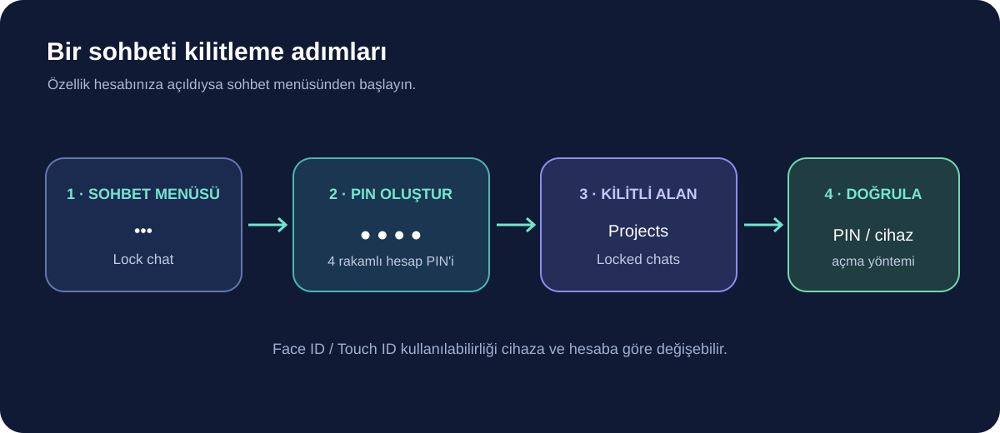

OpenAI, 20 Ekim 2026’da ChatGPT’de Kilitli Sohbetler özelliğini kullanıma açmaya başladı. Özellik, seçtiğiniz konuşmaları normal sohbet geçmişi, sabitlenmiş sohbetler ve olağan arama sonuçlarından çıkarıyor; tekrar açarken dört haneli hesap PIN’i veya desteklenen cihazlarda biyometrik doğrulama istiyor. Dağıtım kademeli olduğu için menüde hemen görünmeyebilir.
Özelliği doğru anlamak önemli: “kilitli” sohbet, hesabınızda saklanan bir konuşmanın görünürlüğünü ve ona erişim adımını değiştiriyor. OpenAI bunun uçtan uca şifreleme ya da ayrı, şifreli bir kasa olmadığını açıkça belirtiyor. Sohbet saklama süresini veya “Improve the model for everyone” ayarını da değiştirmiyor. Bu rehberde nasıl açılacağını, hangi bilgileri gizlemediğini ve PIN’i unutursanız ne olacağını anlatıyoruz.

Kilitli sohbet nasıl açılır?
Web’de veya desteklenen ChatGPT uygulamasında kilitlemek istediğiniz uygun bir konuşmayı açın. Sohbetin yanındaki üç noktalı menüden Lock chat seçeneğini seçip onaylayın. İlk kullanımda dört rakamlı hesap PIN’i oluşturmanız istenir. Kilitli konuşmaları daha sonra Projects > Locked chats alanından bulup PIN’inizle açabilirsiniz.
- Kilitlenebilir bir sohbetin yanındaki ••• menüsünü açın.
- Lock chat seçeneğine dokunun ve onaylayın.
- İlk seferde dört haneli bir hesap PIN’i oluşturun; mevcut PIN’iniz varsa girin.
- Kilitli sohbeti görmek için Projects > Locked chats bölümüne gidip kimliğinizi doğrulayın.
Desteklenen iPhone ve Android cihazlarda Face ID, Touch ID veya cihaz kilidiyle açma seçeneği de bulunabiliyor. Bu doğrulama isteğe bağlı ve cihaz başına ayarlanıyor; hesap PIN’inin yerine geçmiyor. Web’de erişim, PIN’i girdiğiniz sekme veya pencereye bağlı. Sayfayı yenilemek ya da sekmeyi kapatmak o erişimi sonlandırıyor. Başka sekmelerde yeniden doğrulama gerekiyor. Kilitledikten sonra diğer cihazlardaki açık sohbet listeleri yenilenene kadar başlığı gösterebilir; iOS’ta önceden yüklenmiş içerik de uygulama yenilenene dek görünür kalabilir. Ekran paylaşmadan önce açık oturumları kontrol edin.
Ne yapar, ne yapmaz?
Kilitli sohbetler, ortak kullanılan bir bilgisayarda veya ekran paylaşırken belirli konuşmaların başlık ve içeriğinin normal geçmişte görünmesini engellemek için tasarlanmış. Sohbeti açmak için ek bir doğrulama adımı ekliyor. Fakat bunu cihazı kullanan herkesten ya da hizmet sağlayıcısından veriyi kriptografik olarak gizleyen bir “gizli kasa” gibi düşünmemek gerekir.
| Durum | Kilitli Sohbetler’in etkisi |
|---|---|
| Normal sohbet geçmişi ve arama | Seçilen konuşmayı normal listeden ve aramadan saklar |
| Açma erişimi | PIN veya desteklenen cihaz doğrulaması ister |
| Uçtan uca şifreleme | Sağlamaz; ayrı şifreli kasa değildir |
| Saklama ve model geliştirme ayarı | Mevcut ayarları değiştirmez |
| Önceden kaydedilmiş bellek | Kilitleme, önceden hatırlanan bilgiyi silmez |

PIN’i unutursanız dikkat: sıfırlama sohbetleri silebilir
OpenAI’nin destek belgesindeki en önemli uyarılardan biri PIN sıfırlama işlemi. Mevcut PIN’inizi biliyorsanız PIN’i değiştirmek kilitli sohbetleri silmiyor. Ancak PIN’i unuttuğunuzda hesabın PIN’ini sıfırlamak; bütün kilitli sohbetleri, yalnızca bu sohbetlerde tutulan anıları ve önceki PIN’in koruduğu dosya ya da içerikleri kalıcı olarak silebiliyor. Bu işlem geri alınamıyor ve destek ekibi silinen içerikleri kurtaramıyor.
Bu yüzden PIN’i unuttuğunuzda ekrandaki uyarıyı okumadan sıfırlama işlemini onaylamayın. İş için gerekli dosyalarınız veya konuşmalarınız varsa yedekleme ve saklama gereksinimlerinizi önceden düşünün. Kilitli sohbetlerdeki içeriği açabilen biri yine de kopyalayabilir; özellik erişimi zorlaştırır, içeriğin kopyalanmasını imkânsız kılmaz.
Paylaşılan bağlantı ayrıca kontrol edilmeli
Daha önce paylaşım bağlantısı oluşturduğunuz uygun bir sohbeti kilitlemek, o bağlantıyı silmiyor. OpenAI’ye göre bağlantıyla daha önce paylaşılmış içerik erişilebilir kalabiliyor; sohbet kilitliyken gönderilen yeni mesajlar bağlantıya eklenmiyor. Eski paylaşımı kapatmak istiyorsanız sohbeti kilitlemenin yanı sıra paylaşım bağlantısını ayrıca silmeniz gerekir.
Kilitli sohbete yüklediğiniz veya sohbette oluşturduğunuz dosyalar sohbetle birlikte korunabiliyor. Ancak Space’e başka bir yerden eklediğiniz dosyanın ayrı erişim kuralları devam ediyor. Yani bir sohbeti kilitlemek, o projedeki ya da Space’teki bütün dosyaları otomatik olarak kilitlemez.
Kilitli sohbet mi, geçici sohbet mi?
Amacınız konuşmayı daha sonra saklamak ve normal geçmişte görünmesini azaltmaksa Kilitli Sohbetler uygundur. Bir defalık, geçmişe kaydedilmeyen ve model geliştirme ayarıyla farklı davranan bir konuşma istiyorsanız Geçici Sohbet’i değerlendirin. Geçici konuşmalar normal geçmişte görünmez ve model geliştirme için kullanılmaz; ancak güvenlik amacıyla kopyaları 30 güne kadar saklanabilir. OpenAI, Geçici Sohbetlerin de mevcut belleği kullanıp kullanmayacağının başlamadan önce seçilebildiğini; yeni bellek oluşturmadığını belirtiyor. Geçici sohbeti kaydettiğinizde normal sohbet ayarları devreye giriyor. Bu iki mod birbirinin alternatifi gibi görünse de amaçları farklı.
| Özellik | Kilitli sohbet | Geçici sohbet |
|---|---|---|
| Konuşma saklanır mı? | Evet, hesabınızda kalır | Normal geçmişe kaydedilmez; güvenlik amacıyla kopyası 30 güne kadar tutulabilir |
| Erişim adımı | PIN veya desteklenen cihaz doğrulaması | Ayrı PIN yok |
| Model geliştirme tercihi | Hesabın mevcut ayarını izler | Model geliştirme için kullanılmaz |
| Temel amaç | Kaydedilmiş sohbeti normal listeden gizlemek | Geçmişe kaydedilmeyen konuşma |
Kimler kullanabilir, hangi sohbetler kilitlenemiyor?
OpenAI’nin güncel destek sayfası özelliğin Free, Go, Plus, Pro, Business, Enterprise ve Edu planlarına sunulduğunu belirtiyor. Web, iOS ve Android uygulamaları ile Windows ve macOS için yeni ChatGPT masaüstü uygulaması destekleniyor; özellik kademeli dağıtıldığı için hesabınızda görünmesi zaman alabilir. Masaüstünde eski bir istemci kullanıyorsanız yeni masaüstü uygulamasının gerekebileceğini de göz önünde bulundurun.
Geçici, arşivlenmiş ve grup sohbetleri; paylaşılan bağlantıdan açılan konuşmalar; zamanlanmış görev, toplantı kaydı veya devam eden arka plan işiyle bağlantılı sohbetler kilitlenemeyen örnekler arasında. Kurumsal çalışma alanlarında sohbetin kilitlenmesi kurumun uyumluluk ve erişim kurallarını geçersiz kılmıyor; uygun çalışma alanı verileri uyumluluk kayıtlarında yer almaya devam edebiliyor.
Özet: görünürlük kontrolü, gizlilik ayarlarının yerine geçmez
Kilitli Sohbetler, belirli konuşmaları normal geçmişten saklayıp tekrar açarken PIN istemek için kullanışlı olabilir. Hassas bilgilerin hizmette ne kadar tutulduğunu veya model geliştirmede kullanılıp kullanılmadığını değiştirmez; bunu ilgili veri kontrollerinden ayrıca yönetin. Paylaşım linklerini kontrol edin, önceden kaydedilmiş anıların silindiğini varsaymayın ve PIN sıfırlamanın geri alınamayacak içerik kaybına yol açabileceğini unutmayın.
Kaynaklar
- OpenAI Yardım Merkezi: ChatGPT’de kilitli sohbetleri kullanma
- OpenAI Yardım Merkezi: ChatGPT sürüm notları (20 Ekim 2026 duyurusu)
- OpenAI Yardım Merkezi: Geçici Sohbet SSS
Son kontrol: 25 Ekim 2026. Özelliklerin kullanılabilirliği hesap ve uygulama sürümüne göre değişebilir; hassas bir sohbeti kilitlemeden önce OpenAI’nin güncel açıklamasını kontrol edin.